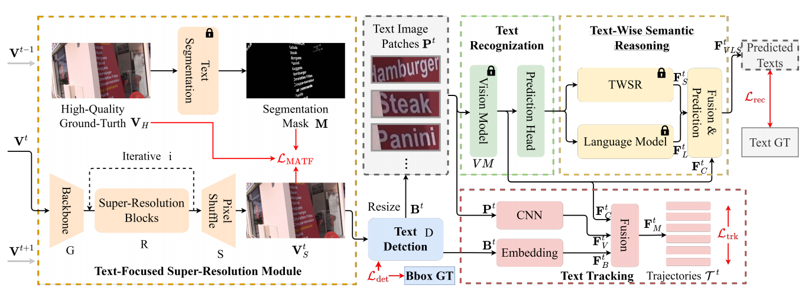

News
- [2025-09-25] Actively searching for a Ph.D. position in Computer Vision or AI Visual Applications.
- [2024-04-03] honored with the Shanghai Computer Society Outstanding Theses Award.
Research Interest
My previous research spans four threads focusing on Image Text in the wild.
Recognition
English and Chinese text recognition (character-wise & textline-wise).
Segmentation
Text segmentation (instance-level) in the wild with undersupervision.
Spotting
End-to-End text spotting (integrated detection, recognition and tracking) in video scenarioes.
Reconstruction
Text reconstruction for occluded text in the wild or damaged text on ancient artifacts
Publications

Education
FDU (Fudan University)
M.Sc in Computer Science | 2020 - 2023
TJU (Tongji University)
B.Sc in Software Engineering | 2015 - 2019